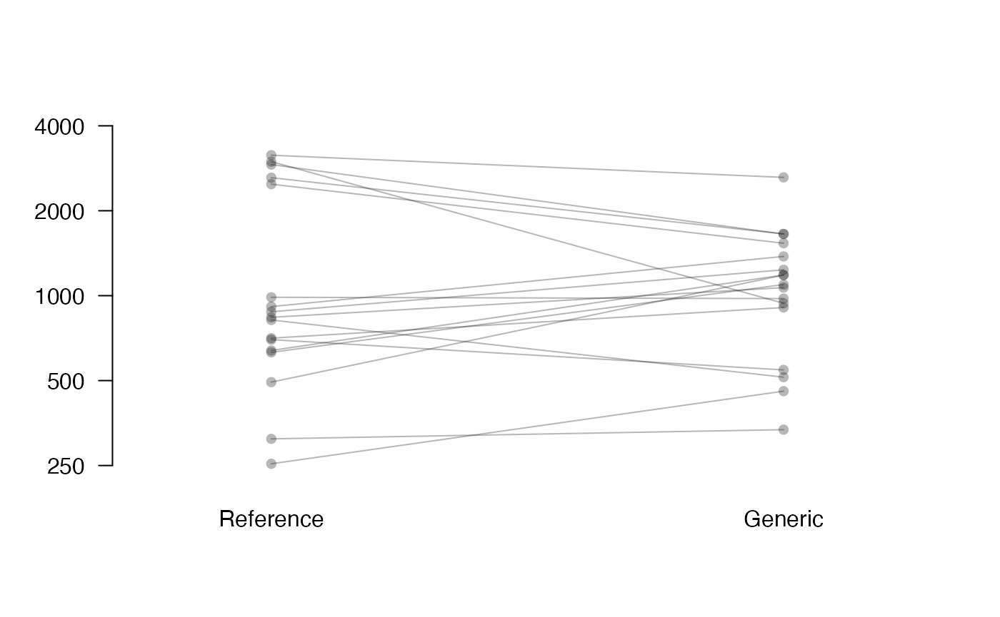
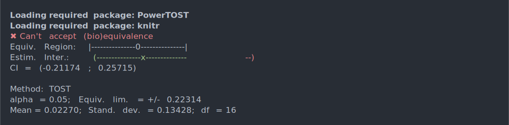
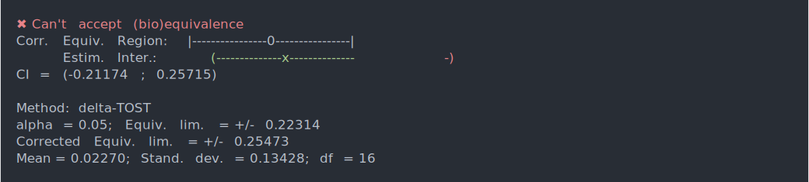
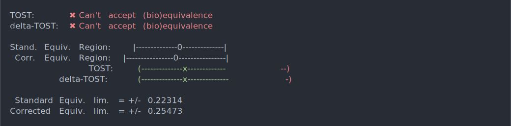
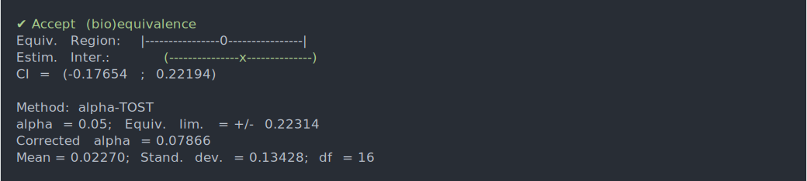
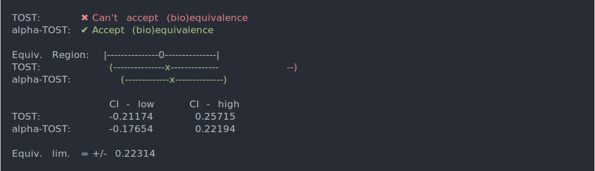
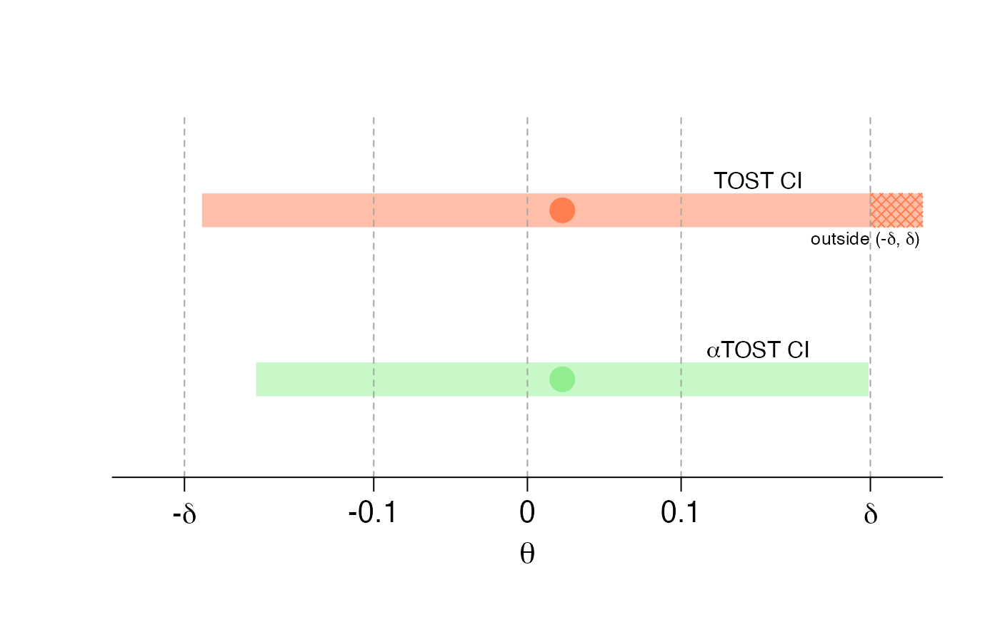

In the following we use the methodology developed in this paper for the evaluation of the bioequivalence of two cream products. The dataset was provided by the authors of Quartier et al. (2019), who use the cutaneous bioequivalence method detailed in their paper. It contains \(17\) pairs of comparable porcine skin samples on which measurements of econazole nitrate deposition (an antifungal medication used to treat skin infections) were collected using two bioequivalent products. These measurements were then considered on the logarithmic scale and saved as an RData file called skin.
The results presented in Figure 4 of Boulaguiem et al. (2023) can be reproduced as follows:
library(cTOST)
#> Loading required package: PowerTOST
#> Loading required package: cli
#> Loading required package: knitr
data(skin)
# Empty plot
plot(1,1,pch="",axes=FALSE,xlab="",ylab="",main="",
ylim=c(min(unlist(skin)),log(4000)),xlim=c(0.75, 2.25))
# Plotting and linking the paired data points of each group
for(i in 1:nrow(skin)){
points(c(1,2),skin[i,],col=paste0(gray(0.1),50),pch=16)
segments(1,skin[i,1],2,skin[i,2],
col=paste0(gray(0.1),50))
}
axis(1, at = c(1,2), c("Reference", "Generic"),tick=FALSE)
axis(2, at = log(c(250,500,1000,2000,4000)), c(250,500,1000,2000,4000), las=2)
axis(2, at = mean(c(min(unlist(skin)),log(4000))), expression(paste("ECZ deposition (ng/cm"^2*")")),padj=-4.5, tick = FALSE)
In order to assess bioequivalence, we extract each of means between the two groups, the number of degrees of freedom, and the standard error:
# Difference in means between the two groups
theta_hat = diff(apply(skin,2,mean))
# Number of degrees of freedom
nu = nrow(skin)-1
# Standard error
sig_hat = sd(apply(skin,1,diff))/sqrt(nu)We consider in the paper a significance level of \(5\%\) and an equivalence limit at \(\text{delta}=log(1.25)\).
Considering these parameters, the standard TOST does not accept bioequivalence:
res_tost = tost(theta = theta_hat, sigma = sig_hat, nu = nu, alpha = 0.05, delta = log(1.25))
res_tost
Using the \(\delta\)-TOST, we still cannot accept bioequivalence, even though the corrected region is larger:
res_dtost = dtost(theta = theta_hat, sigma = sig_hat, nu = nu, alpha = 0.05, delta = log(1.25))
res_dtost
compare_to_tost(res_dtost)
However, the \(\alpha\)-TOST allows us to accept bioequivalence:
res_atost = atost(theta = theta_hat, sigma = sig_hat, nu = nu, alpha = 0.05, delta = log(1.25))
res_atost
compare_to_tost(res_atost)
To visually assess bioequivalence with the interval inclusion principal, we reproduce Figure 5 of Boulaguiem et al. (2023) with the following code:
# Nominal level and zquivalence bounds
alpha = 0.05
delta = log(1.25)
# Empty plot
plot(NA, axes = F, xlim = c(-0.25, 0.25), ylim = c(0.5, 2.5), xlab = " ", ylab = " ")
# Corrected level used by aTOST
alpha_star = res_atost$corrected_alpha
# TOST's CI upper and lower bound
a1 = theta_hat + sig_hat*qt(alpha, df = nu)
a2 = theta_hat - sig_hat*qt(alpha, df = nu)
# aTOST's CI upper and lower bound
b1 = theta_hat + sig_hat*qt(alpha_star, df = nu)
b2 = theta_hat - sig_hat*qt(alpha_star, df = nu)
# Set the colors and their transparent counterpart
cols=c("coral","palegreen2")
t.cols=sapply(c("coral","palegreen2"),function(x){
rgb.val <- col2rgb(x)
rgb(rgb.val[1], rgb.val[2], rgb.val[3],
max = 255,
alpha = 127.5)
})
# Plotting the TOST and aTOST CIs
d = 0.1
polygon(c(a1, a2, a2, a1), c(1-d, 1-d, 1+d, 1+d) + 1, border = NA,
col = t.cols[1])
polygon(c(delta, a2, a2, delta), c(1-d, 1-d, 1+d, 1+d) + 1, border = NA,
col = cols[1], density = 20, angle = 45)
polygon(c(delta, a2, a2, delta), c(1-d, 1-d, 1+d, 1+d) + 1, border = NA,
col = cols[1], density = 20, angle = -45)
polygon(c(b1, b2, b2, b1), c(1-d, 1-d, 1+d, 1+d), border = NA,
col = t.cols[2])
# Plotting the difference in means
points(theta_hat, 2, col = cols[1], pch = 16, cex = 2.5)
points(theta_hat, 1, col = cols[2], pch = 16, cex = 2.5)
# Adding text for readability
text(0.15, 2 + 1.75*d, "TOST CI")
text(0.15, 1 + 1.75*d, expression(paste(alpha,"TOST CI")))
text(0.22, 2 - 1.75*d, expression(paste("outside (-",delta,", ",delta,")")), cex = 0.8)
abline(v = c(-0.3, -log(1.25), -0.1, 0, 0.1, log(1.25), 0.3),
col = "grey65", lty = 2)
axis(1, at = c(-0.3, -log(1.25), -0.1, 0, 0.1, log(1.25), 0.3),
labels = c("-0.3", expression(paste("-",delta)), "-0.1", "0", "0.1",
expression(delta), "0.3"),padj=-0.15,cex.axis=1.3)
mtext(expression(theta), side = 1, line = 2.35, cex = 1.4)